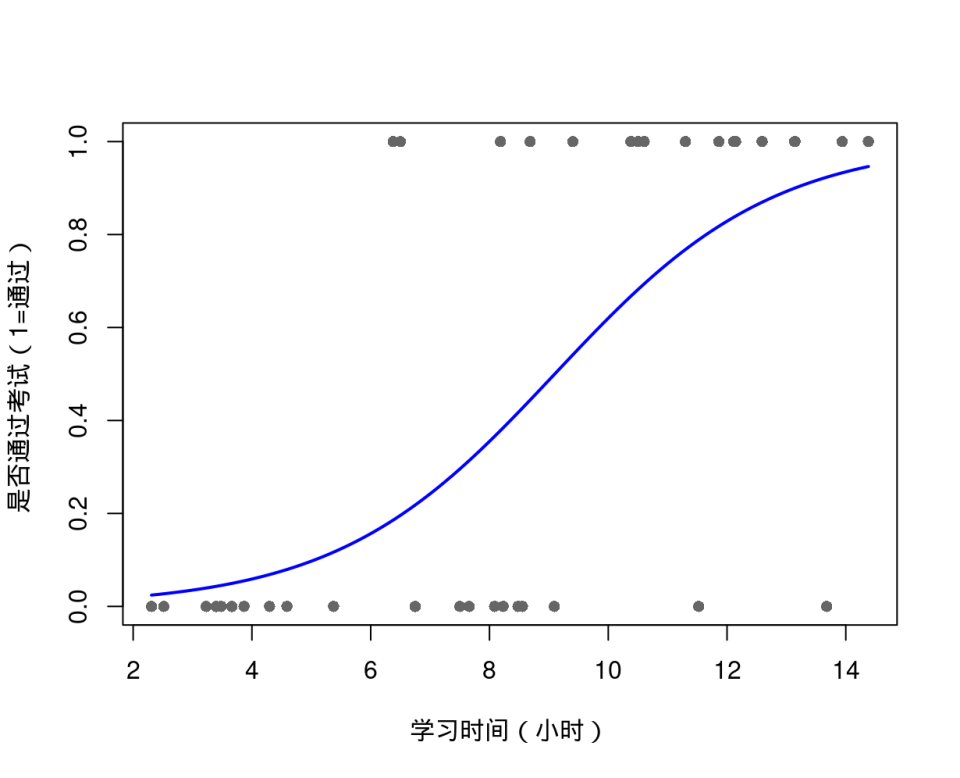
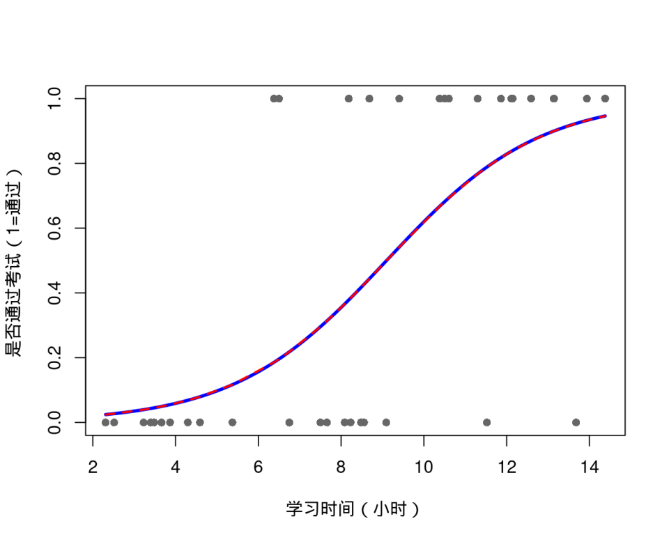
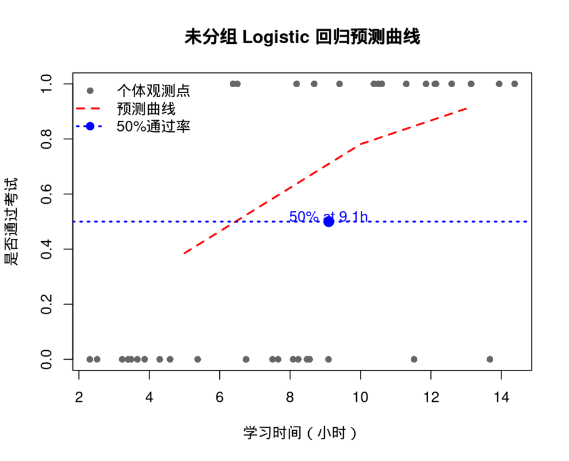
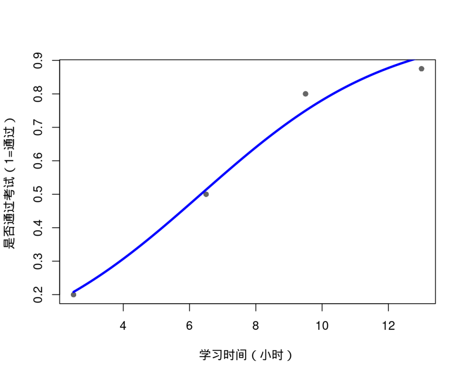
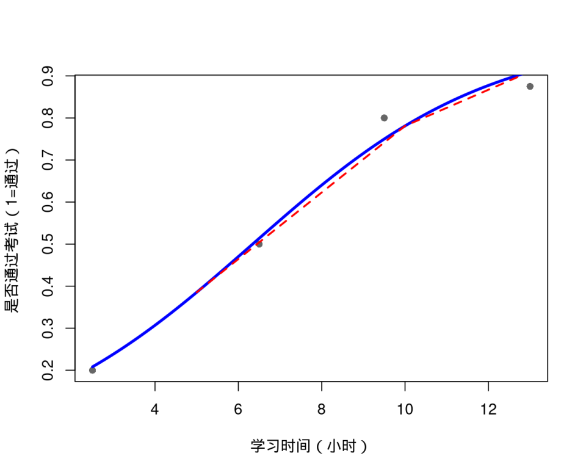
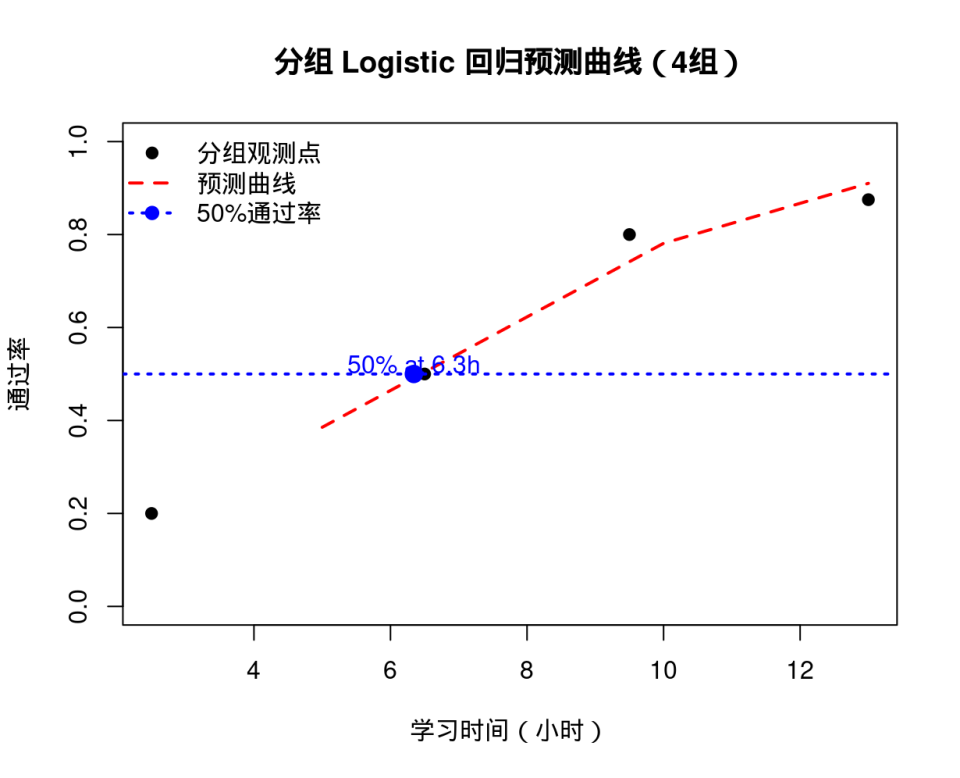

这门课学到第9章，让我们理清所有模型的脉络：
前几章我们做预测和回归，往往假设结果（因变量）是一个连续的数值，比如“收入多少元”、“血压多高”。但在现实中，我们更关心这些问题：
这些结果天然就是定性的或离散计数的。我们能直接用多元线性回归硬套吗？
不是所有结果都适合拿直线去硬套。会算不等于该算。
如果硬套 $y = \beta_0 + \beta_1 x$：
如果强行做线性回归：
本章一句话总结：根据响应变量类型，选择合适的统计模型。
如果自变量里有类别，如何进行 0-1 虚拟变量编码进入模型？
核心工具。深入理解 Logit 变换、发生比 (Odds) 以及参数估计 (MLE 与 WLS)。
怎样合理解释模型系数？模型的显著性该怎么看？
多项 Logistic、有序 Probit 与 Poisson 回归的思想与应用场景对比。
让非数值属性优雅地进入数学方程
在实际应用中，常常不可避免地涉及定性变量（名义尺度变量），比如性别、地区、职业。
数学公式只认数字，不认汉字。
这是数量化理论中最常用的一种方法（也叫虚拟变量、哑变量）。它不赋予类别实际大小意义，仅用 0 和 1 来说明观察单位的属性及特征，以此区分不同类别。
如果定性变量是“性别”，仅有两个类别，我们可以用一个新变量 $X$ 来替代：
注意：1 和 0 绝不代表男比女大、或者女比男大，它仅仅是一个用于区分的开关标签。
有多种有害物质污染大气，将污染物分为 5 类地区：甲、乙、丙、丁、戊。
如果直接赋值 $1,2,3,4,5$ 就会强行引入大小和等距关系（错误做法）。
正确做法是：引入 4 个变量 $(X_1, X_2, X_3, X_4)$ 来共同表示它：
一般地，某定性变量可取 $K$ 类时，必须用 $K-1$ 个变量表示：
虚拟变量陷阱 (Dummy Variable Trap)
为什么不用 $K$ 个变量？如果用 $K$ 个变量，则任何一个观测样本必然满足 $X_1 + X_2 + \dots + X_K = 1$。这会导致自变量之间出现完全多重共线性（其中任意 $K-1$ 个可推知剩余一个），令回归模型的矩阵无法求逆而彻底崩溃！超越线性极限，概率建模的经典之作
当被解释变量（因变量）是分类变量时，我们能用判别分析，为什么还要引入 Logistic 回归？
解决概率出界问题的核心之道：我们不直接对概率 $p$ 建模，而是对 $p$ 进行一个严格单调的函数变换 $Q(p)$。
为什么是它？
现在，我们可以将变换后的 $Q$（对数胜算）与自变量建立普通的线性方程：
反解出我们真正关心的概率 $p$：
这就是大名鼎鼎的 Logistic (逻辑斯谛) 曲线，呈现优美的 S 型结构！
Logistic 回归最怕的，不是不会估参数，而是估完不会说人话。
$\beta_j$ 表示 $x_j$ 每增加 1 个单位，对数胜算 (log-odds) 的变化量。但这太抽象了！
我们将系数取指数化，$\exp(\beta_j)$ 表示 $x_j$ 增加 1 个单位时，事件发生比 (Odds) 变成原来的多少倍。
为了讲清接下来的两种估计方法，我们看一个具体场景：不同折扣力度对用户购买意愿的影响。
记录了每个个体的独立行为，因变量是绝对的 0 或 1。
| 用户ID | 折扣力度 $X$ | 是否购买 $Y$ |
|---|---|---|
| 001 | 10% | 0 |
| 002 | 10% | 0 |
| 003 | 20% | 1 |
| ... | ... | ... |
| 1000 | 50% | 1 |
按相同的自变量条件（如相同折扣）汇总，因变量是转化率 $p_i$。
| 折扣组 $i$ | 折扣 $X_i$ | 总人数 $n_i$ | 购买率 $p_i$ |
|---|---|---|---|
| 1 | 10% | 200 | 0.05 |
| 2 | 20% | 300 | 0.15 |
| 3 | 30% | 150 | 0.40 |
| 4 | 40% | 250 | 0.70 |
| 5 | 50% | 100 | 0.90 |
同一批数据，可以表现为以上两种形态。它们分别对应了 WLS 和 MLE 两种解法！
数据形态决定了参数估计的底层思路
对于形态二的数据，我们已知每个折扣组 $i$ 的真实购买率 $p_i$ (如 10%折扣组 $p_1=0.05$)。
我们可以直接用真实的比例做逻辑变换：
得到普通的线性回归模型形式：
上述转换后的线性模型，能直接用普通的最小二乘法 (OLS) 求解吗？绝对不能！
因为 $p_i'$ 作为变换后的观测值，存在严重的异方差性。当组内样本 $n_i$ 较大时，$p_i'$ 的近似理论方差为：
为什么方差不同？打折 20% 组有 300 人，打折 50% 组只有 100 人。300 人算出的购买率更稳健（方差更小），所以权重 $\omega_i$ 应该更大！为了纠正异方差，必须使用加权最小二乘法 (WLS)。选取方差的倒数作为权数：
回到形态一：未分组数据。在现实商业中，我们往往只有 1000 行 0/1 的独立个体记录，没法算每个条件下的具体转化率了。WLS 失效，需启用极大似然估计 (MLE)。
每个用户 $y_i$ 的购买行为服从伯努利分布，概率函数可被巧妙地统一写为：
(当 $y_i=1$ 时结果为购买概率 $\pi_i$，当 $y_i=0$ 时结果为不购买概率 $1-\pi_i$)
对于用户001(没买)概率是 $1-\pi_1$，用户003(买了)概率是 $\pi_3$。假设所有样本独立，全部联合发生（这1000人的实际表现）的概率即连乘：
由 Logistic 模型的设定，第一项就是完美的线性组合：
将其代入对数似然函数中，得到关于参数 $\beta$ 的终极优化目标：
老师统计学生复习时间与是否通过统计学考试的关系：
于是出现两种数据结构：
| 类型 | 数据形式 | 示例 | 响应变量 | 模型解释 |
|---|---|---|---|---|
| 未分组数据 | 每个学生一条记录 | 学10小时通过 | \(Y_i=0/1\) | 个体是否通过 |
| 分组数据 | 时间段汇总 | 30/40 | \(y_i/n_i\) | 每组通过率 |
| 学习时间 \(x_i\) | 是否通过 \(Y_i\) |
| 5 | 0 |
| 8 | 1 |
| 10 | 1 |
| 12 | 1 |
| 3 | 0 |
| 4 | 0 |
模型形式： \( \text{logit}(p_i)=\beta_0+\beta_1 x_i,\quad Y_i \sim Binomial(1,p_i),\quad p_i = P(Y_i=1|x_i) \)
| ID | StudyTime | Pass |
|---|---|---|
| S01 | 2.5 | 0 |
| S02 | 3.0 | 0 |
| S03 | 4.0 | 0 |
| S04 | 5.0 | 1 |
| S05 | 5.5 | 0 |
| S06 | 6.0 | 1 |
| ... | ... | ... |
| S38 | 13.5 | 1 |
模型：
预测公式：



| 区间 | n | y | y/n |
|---|---|---|---|
| 0-5 | 10 | 2 | 0.20 |
| 5-8 | 10 | 5 | 0.50 |
| 8-11 | 10 | 8 | 0.80 |
| 11-15 | 8 | 7 | 0.875 |
模型：



如果结果不止两类怎么办？
现实中很多问题不止“是/否”，人类很擅长搞出更多层次：
如交通方式选择：公交/地铁/打车
思路：多项 Logistic 回归。设定一个基准类（如公交），分别对“地铁vs公交”、“打车vs公交”建立发生比方程，比较不同类的相对选择。
如满意度：低/中/高；病情：轻/中/重
思路：有序 Logistic/Probit。不仅比较类别，还要保留顺序信息。通过建立“累计概率”方程与隐变量的阈值跨越来建模等级推进趋势。
研究三类饮料选择：可乐（1）、果汁（2）、咖啡（3），设咖啡为基准类。
给定：\( x_1 = 4 \)，\( x_2 = 6 \)
外卖满意度分为三个等级：不满意 / 一般 / 满意（有序变量）
建立“是否超过某个等级”的对数几率模型：
给定：配送时间 x₁ = 30 分钟，价格 x₂ = 25 元
严谨的统计建模流程
确定分组因变量（0-1），并筛选定性与定量的自变量（定性变量需做 0-1 虚拟变量编码，规避陷阱）。
将数据切分。一部分用于训练估计模型，预留一部分作为测试集用于盲测模型的分类泛化能力。
虽然不需要正态性假设，但必须确保自变量之间不存在高度多重共线性，否则会导致极大似然迭代无法收敛。
运用 MLE 迭代求解回归系数。通过似然比检验 (Likelihood Ratio Test)、Wald 检验等评估整体模型与单个参数的显著性。
通过系数的符号（正负）和大小（Odds Ratio, $OR = e^{\beta}$），向业务方清晰解释各因素对事件发生概率的相对影响逻辑。
将建好的模型拿到预留的测试样本中计算混淆矩阵、ROC 曲线与 AUC 值，验证实际判别分类精度。
当响应变量是次数（0,1,2,...）时，不能再用普通回归或分类模型：
我们不直接预测“具体发生几次”，而是预测： 平均发生次数（期望） \( \mu = E(Y|X) \)
给定 \( \mu \)，响应变量 \( Y \) 服从 Poisson 分布：
研究：顾客一天的下单次数（Y）
若：\( x_1 = 20 \)，\( x_2 = 1 \)
Poisson 模型假设：方差 = 均值
研究：用户一天点击次数
自变量：浏览时间 \(x\)（分钟）, 建立模型： \[ \ln(\mu)=0.3+0.05x \]
设 \(x=30\)，设\(\alpha=0.5\)
数据中“0”异常多
模型形式
电商用户下单次数
很多用户：永远不买 → 0
设：\(\pi=0.4,\ \mu=2\)
Logistic 并不是唯一选择
模型形式
考试是否通过（0/1）
自变量：学习时间 x
x=15
数据存在“分组结构” :不同学校 / 城市 / 班级存在差异
模型形式
不同学校学生成绩
设：
现实关系通常不是直线
模型形式
温度与用电量
设 \(f(30)=1.2\)
这一章真正要带走的，不只是几个模型名字：
如果给你一个“用户是否购买高阶会员服务”的研究题目，你会怎么开始？
感谢聆听 (End of Chapter 9)